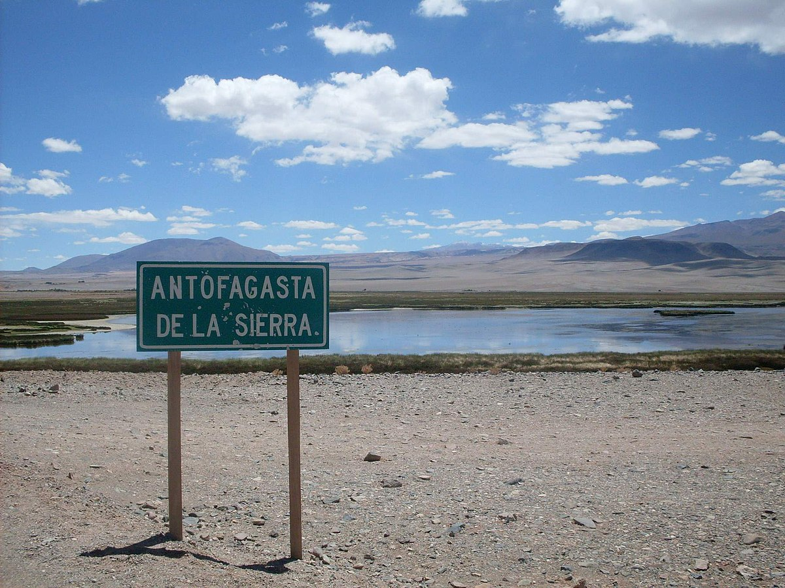

Este sitio se presenta un claro ejemplo de cómo, a través del registro arqueológico, se puede dar cuentas del cambio de poblaciones cazadoras hacia el pastoreo, por medio de la domesticación de animales. Pintar (1994) distingue dos niveles representativos en los que encontró artefactos líticos relacionados con cazadores puneños y restos de de camélidos, particularmente restos de llama (Lama lama).
El primer nivel (llamado “2b9”) tiene una antigüedad poco mayor a 7000 años antes del presente. Se encuentra en una cantera alejada del yacimiento central. En este nivel se hallaron puntas de proyectil, raspadores, entre otros instrumentos líticos, siendo la materia prima dominante la dacita (una roca ígnea volcánica). Los artefactos que se encuentran demuestran una gran especialización en la caza de unas pocas especies animales. Análisis faunísticos en una pequeña estructura de combustión, indican que más del 90 % de los especímenes identificados (4 adultos y 1 neonato) corresponden al género Lama.
El segundo nivel (llamado “2b3”) nos lleva a unos 4770 años antes del presente. Las evidencias de interés encontradas en este nivel son: 3 estructuras de combustión (indicando uso de fuego), acumulaciones de restos líticos y faunísticos, y un pozo cavado que podría haberse usado para el almacenaje. Hay evidencias de cambios climáticos en la región entre los 7500 y 4000 AP (aridez y aumento de la temperatura), lo cual podría haber traído consecuencias drásticas en la obtención de materia prima lítica y recursos de subsistencia.
Este acontecimiento, en última instancia, desencadeno un proceso de interacción creciente con las poblaciones de camélidos, al ser estas el recurso más seguro para la subsistencia. Es posible que este proceso de intensificación y especialización en el consumo de camélidos haya desembocado en un proceso de control de estas poblaciones, que luego finalizaría con la domesticación de la llama. Además, el pozo hallado en el sitio podría indicar una acumulación de recursos, restringiendo así la movilidad residencial. Todo esto, a su vez, estaría acompañado de un aumento de la población humana. Este nivel representa un puesto temporal utilizado por aquellos cazadores que poseían pequeños rebaños de llamas.
¿Cómo esta evidencia material nos permite comprender el estilo de vida de estos grupos hace miles de años?
Una posible hipótesis, en base a los estudios realizados, es la siguiente: hace más de 7000 años en este sitio y sus alrededores había pequeños grupos locales de cazadores de camélidos y otros animales pequeños, que habrían tenido un patrón de asentamiento bastante móvil. Luego, 3000 años más tarde, debido a cambios climáticos, sociales y por un aumento demográfico en el grupo, habrían comenzado con la domesticación de camélidos, lo cual llevó a un modo de vida sedentario.
Bibliografía y fuentes
- Pintar, Elizabeth (1994). Cazadores y pastores arcaicos en la Puna Andina. Relaciones, tomo XX, Buenos Aires (1995), págs. 129-140.